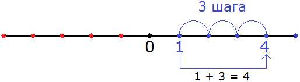
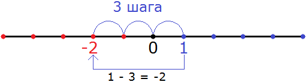
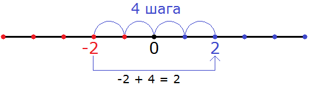
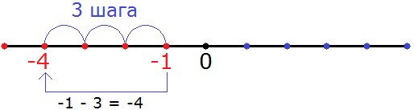
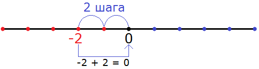
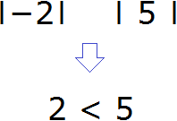
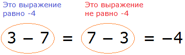
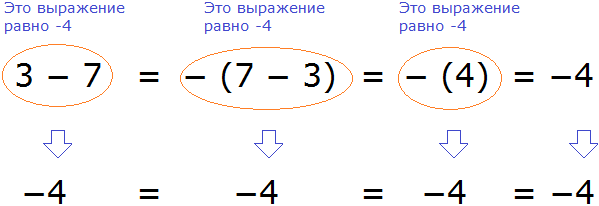

В данном уроке мы изýчим сложение и вычитание целых чисел.
Напомним, что целые числа — это все положительные и отрицательные числа, а также число 0. Например, следующие числа являются целыми:
−3, −2, −1, 0, 1, 2, 3
Положительные числа легко складываются и вычитаются, умножаются и делятся. К сожалению, этого нельзя сказать об отрицательных числах, которые смущают многих новичков своими минусами перед каждой цифрой.
Примеры сложения и вычитания целых чисел
Первое чему следует научиться это складывать и вычитать целые числа с помощью координатной прямой. Совсем необязательно рисовать координатную прямую. Достаточно воображать её мысленно и видеть, где располагаются отрицательные числа и где положительные.
Рассмотрим следующее простейшее выражение
1 + 3
Значение данного выражения равно 4
1 + 3 = 4
Этот пример можно понять с помощью координатной прямой. Для этого из точки, где располагается число 1, нужно сдвинуться вправо на три шага. В результате мы окажемся в точке, где располагается число 4. На рисунке можно увидеть, как это происходит:

Знак плюса в выражении 1 + 3 указывает нам, что нужно двигаться вправо в сторону увеличения чисел.
Пример 2. Найдём значение выражения 1 − 3
Значение данного выражения равно −2
1 − 3 = −2
Этот пример опять же можно понять с помощью координатной прямой. Для этого из точки, где располагается число 1 нужно сдвинуться влево на три шага. В результате мы окажемся в точке, где располагается отрицательное число −2. На рисунке можно увидеть, как это происходит:

Знак минуса в выражении 1 − 3 указывает нам, что нужно двигаться влево в сторону уменьшения чисел.
Вообще, если осуществляется сложение, то нужно двигаться вправо в сторону увеличения. Если же осуществляется вычитание, то нужно двигаться влево в сторону уменьшения.
Пример 3. Найти значение выражения −2 + 4
Значение данного выражения равно 2
−2 + 4 = 2
Этот пример опять же можно понять с помощью координатной прямой. Для этого из точки, где располагается отрицательное число −2 нужно сдвинуться вправо на четыре шага. В результате мы окажемся в точке, где располагается положительное число 2

Видно, что мы сдвинулись из точки где располагается отрицательное число −2 в правую сторону на четыре шага, и оказались в точке, где располагается положительное число 2.
Пример 4. Найти значение выражения −1 − 3
Значение данного выражения равно −4
−1 − 3 = −4
Этот пример опять же можно решить с помощью координатной прямой. Для этого из точки, где располагается отрицательное число −1 нужно сдвинуться влево на три шага. В результате мы окажемся в точке, где располагается отрицательное число −4

Видно, что мы сдвинулись из точки где располагается отрицательное число −1 в левую сторону на три шага, и оказались в точке, где располагается отрицательное число −4.
Пример 5. Найти значение выражения −2 + 2
Значение данного выражения равно 0
−2 + 2 = 0
Этот пример можно решить с помощью координатной прямой. Для этого из точки, где располагается отрицательное число −2 нужно сдвинуться вправо на два шага. В результате мы окажемся в точке, где располагается число 0

Видно, что мы сдвинулись из точки где располагается отрицательное число −2 в правую сторону на два шага и оказались в точке, где располагается число 0.
Правила сложения и вычитания целых чисел
Чтобы сложить или вычесть целые числа, вовсе необязательно каждый раз воображать координатную прямую, и тем более рисовать её. Можно воспользоваться готовыми правилами.
Применяя правила, нужно обращать внимания на знак операции и знаки чисел, которые нужно сложить или вычесть. От этого будет зависеть какое правило применять.
Пример 1. Найти значение выражения −2 + 5
Здесь к отрицательному числу прибавляется положительное число. Другими словами, осуществляется сложение чисел с разными знаками, потому что −2 это отрицательное число, а 5 — положительное. Для таких случаев применяется следующее правило:
Чтобы сложить числа с разными знаками, нужно из большего модуля вычесть меньший модуль, и перед полученным ответом поставить знак того числа, модуль которого больше.
Итак, посмотрим какой модуль больше:

Модуль числа 5 больше, чем модуль числа −2. Правило требует из большего модуля вычесть меньший. Поэтому мы должны из 5 вычесть 2, и перед полученным ответом поставить знак того числа, модуль которого больше.
У числа 5 модуль больше, поэтому знак этого числа и будет в ответе. То есть ответ будет положительным:
−2 + 5 = 5 − 2 = 3
Обычно записывают покороче: −2 + 5 = 3
Пример 2. Найти значение выражения 3 + (−2)
Здесь как и в предыдущем примере, осуществляется сложение чисел с разными знаками. 3 это положительное число, а −2 — отрицательное. Обратите внимание, что число −2 заключено в скобки, чтобы сделать выражение понятнее. Это выражение намного проще для восприятия, чем выражение 3 + −2.
Итак, применим правило сложения чисел с разными знаками. Как и в прошлом примере, из большего модуля вычитаем меньший модуль и перед ответом ставим знак того числа, модуль которого больше:
3 + (−2) = |3| − |−2| = 3 − 2 = 1
Модуль числа 3 больше, чем модуль числа −2, поэтому мы из 3 вычли 2, и перед полученным ответом поставили знак того числа, модуль которого больше. У числа 3 модуль больше, поэтому знак этого числа и поставлен в ответе. То есть ответ положительный.
Обычно записывают покороче 3 + (−2) = 1
Пример 3. Найти значение выражения 3 − 7
В этом выражении из меньшего числа вычитается большее. Для такого случая применяется следующее правило:
Чтобы из меньшего числа вычесть большее, нужно из большего числа вычесть меньшее, и перед полученным ответом поставить минус.
3 − 7 = 7 − 3 = −4
В этом выражении есть небольшая загвоздка. Вспомним, что знак равенства (=) ставится между величинами и выражениями тогда, когда они равны между собой.
Значение выражения 3 − 7 как мы узнали равно −4. Это означает, что любые преобразования которые мы будем совершать в данном выражении, должны быть равны −4
Но мы видим, что на втором этапе располагается выражение 7 − 3, которое не равно −4.

Чтобы исправить эту ситуацию, выражение 7 − 3 нужно взять в скобки и перед этой скобкой поставить минус:
3 − 7 = − (7 − 3) = − (4) = −4
В этом случае равенство будет соблюдаться на каждом этапе:

После того, как выражение вычислено, скобки можно убрать, что мы и сделали.
Поэтому, чтобы быть более точным, решение должно выглядеть так:
3 − 7 = − (7 − 3) = − (4) = − 4
Данное правило можно записать с помощью переменных. Выглядеть оно будет следующим образом:
a − b = − (b − a)
Большое количество скобок и знаков операций могут усложнять решение, казалось бы совсем простой задачи, поэтому целесообразнее научиться записывать такие примеры коротко, например 3 − 7 = − 4.
На самом деле сложение и вычитание целых чисел сводится только к сложению. Это означает, что если требуется осуществить вычитание чисел, эту операцию можно заменить сложением.
Итак, знакомимся с новым правилом:
Вычесть одно число из другого означает прибавить к уменьшаемому такое число, которое будет противоположно вычитаемому.
Например, рассмотрим простейшее выражение 5 − 3. На начальных этапах изучения математики мы ставили знак равенства и записывали ответ:
5 − 3 = 2
Но сейчас мы прогрессируем в изучении, поэтому надо приспосабливаться к новым правилам. Новое правило говорит, что вычесть одно число из другого означает прибавить к уменьшаемому такое число, которое будет противоположно вычитаемому.
На примере выражения 5 − 3 попробуем понять это правило. Уменьшаемое в данном выражении это 5, а вычитаемое это 3. Правило говорит, что для того, чтобы из 5 вычесть 3 , нужно к 5 прибавить такое число, которое будет противоположно 3. Противоположное для числа 3 это число −3. Записываем новое выражение:
5 + (−3)
А как находить значения для таких выражений мы уже знаем. Это сложение чисел с разными знаками, которое мы рассмотрели ранее. Чтобы сложить числа с разными знаками, мы из большего модуля вычитаем меньший модуль, и перед полученным ответом поставить знак того числа, модуль которого больше:
5 + (−3) = |5| − |−3| = 5 − 3 = 2
Модуль числа 5 больше, чем модуль числа −3. Поэтому мы из 5 вычли 3 и получили 2. У числа 5 модуль больше, поэтому знак этого числа и поставили в ответе. То есть ответ положителен.
Поначалу быстро заменять вычитание сложением удаётся не всем. Это связано с тем, что положительные числа записываются без знака плюс.
Например, в выражении 3 − 1 знак минуса, указывающий на вычитание, является знаком операции и не относится к единице. Единица в данном случае является положительным числом, и у неё есть свой знак плюса, но мы его не видим, поскольку плюс перед положительными числами не записывают.
А стало быть, для наглядности данное выражение можно записать следующим образом:
(+3) − (+1)
Для удобства числа со своим знаками заключают в скобки. В таком случае заменить вычитание сложением намного проще.
В выражении (+3) − (+1) вычитаемое это число (+1), а противоположное ему число это (−1).
Заменим вычитание сложением и вместо вычитаемого (+1) записываем противоположное ему число (−1)
(+3) − (+1) = (+3) + (−1)
Дальнейшее вычисление не составит особого труда.
(+3) − (+1) = (+3) + (−1) = |3| − |−1| = 3 − 1 = 2
На первый взгляд покажется, какой смысл в этих лишних телодвижениях, если можно старым добрым методом поставить знак равенства и сразу записать ответ 2. На самом деле это правило ещё не раз нас выручит.
Решим предыдущий пример 3 − 7, используя правило вычитания. Сначала приведём выражение к понятному виду, расставив каждому числу свои знаки.
У тройки знак плюса, поскольку она является положительным числом. Минус, указывающий на вычитание не относится к семёрке. У семёрки знак плюса, поскольку она является положительным числом:
(+3) − (+7)
Заменим вычитание сложением:
(+3) − (+7) = (+3) + (−7)
Дальнейшее вычисление не составляет труда:
(+3) − (+7) = (+3) + (-7) = −(|−7| − |+3|) = −(7 − 3) = −(4) = −4
Пример 7. Найти значение выражения −4 − 5
Приведём выражение к понятному виду:
(−4) − (+5)
Перед нами снова операция вычитания. Эту операцию нужно заменить сложением. К уменьшаемому (−4) прибавим число, противоположное вычитаемому (+5). Противоположное число для вычитаемого (+5) это число (−5).
(−4) − (+5) = (−4) + (−5)
Мы пришли к ситуации, где нужно сложить отрицательные числа. Для таких случаев применяется следующее правило:
Чтобы сложить отрицательные числа, нужно сложить их модули, и перед полученным ответом поставить минус.
Итак, сложим модули чисел, как от нас требует правило, и поставим перед полученным ответом минус:
(−4) − (+5) = (−4) + (−5) = |−4| + |−5| = 4 + 5 = −9
Запись с модулями необходимо заключить в скобки и перед этими скобками поставить минус. Так мы обеспечим минус, который должен стоять перед ответом:
(−4) − (+5) = (−4) + (−5) = −(|−4| + |−5|) = −(4 + 5) = −(9) = −9
Решение для данного примера можно записать покороче:
−4 − 5 = −(4 + 5) = −9
или ещё короче:
−4 − 5 = −9
Пример 8. Найти значение выражения −3 − 5 − 7 − 9
Приведём выражение к понятному виду. Здесь все числа, кроме числа −3 являются положительными, поэтому у них будут знаки плюса:
(−3) − (+5) − (+7) − (+9)
Заменим вычитания сложениями. Все минусы, кроме минуса, стоящего перед тройкой, поменяются на плюсы, и все положительные числа поменяются на противоположные:
(−3) − (+5) − (+7) − (+9) = (−3) + (−5) + (−7) + (−9)
Теперь применим правило сложения отрицательных чисел. Чтобы сложить отрицательные числа, нужно сложить их модули и перед полученным ответом поставить минус:
(−3) − (+5) − (+7) − (+9) = (−3) + (−5) + (−7) + (−9) =
= −( |−3| + |−5| + |−7| + |−9| ) = −(3 + 5 + 7 + 9) = −(24) = −24
Решение данного примера можно записать покороче:
−3 − 5 − 7 − 9 = −(3 + 5 + 7 + 9) = −24
или ещё короче:
−3 − 5 − 7 − 9 = −24
Пример 9. Найти значение выражения −10 + 6 − 15 + 11 − 7
Приведём выражение к понятному виду:
(−10) + (+6) − (+15) + (+11) − (+7)
Здесь сразу две операции: сложение и вычитание. Сложение оставляем без изменения, а вычитание заменяем сложением:
(−10) + (+6) − (+15) + (+11) − (+7) = (−10) + (+6) + (−15) + (+11) + (−7)
Соблюдая порядок действий, выполним поочерёдно каждое действие, опираясь на ранее изученные правила. Записи с модулями можно пропустить:
Первое действие:
(−10) + (+6) = − (10 − 6) = − (4) = − 4
Второе действие:
(−4) + (−15) = − (4 + 15) = − (19) = − 19
Третье действие:
(−19) + (+11) = − (19 − 11) = − (8) = −8
Четвёртое действие:
(−8) + (−7) = − (8 + 7) = − (15) = − 15
Таким образом, значение выражения −10 + 6 − 15 + 11 − 7 равно −15
Примечание. Приводить выражение к понятному виду, заключая числа в скобки, вовсе необязательно. Когда происходит привыкание к отрицательным числам, это действие можно пропустить, поскольку оно отнимает время и может запутать.
Итак, для сложения и вычитания целых чисел необходимо запомнить следующие правила:
Чтобы сложить числа с разными знаками, нужно из большего модуля вычесть меньший модуль, и перед полученным ответом поставить знак того числа, модуль которого больше.
Чтобы из меньшего числа вычесть большее, нужно из большего числа вычесть меньшее и перед полученным ответом поставить минус.
Вычесть одно число из другого означает, прибавить к уменьшаемому такое число, которое противоположно вычитаемому.
Чтобы сложить отрицательные числа, нужно сложить их модули, и перед полученным ответом поставить минус.